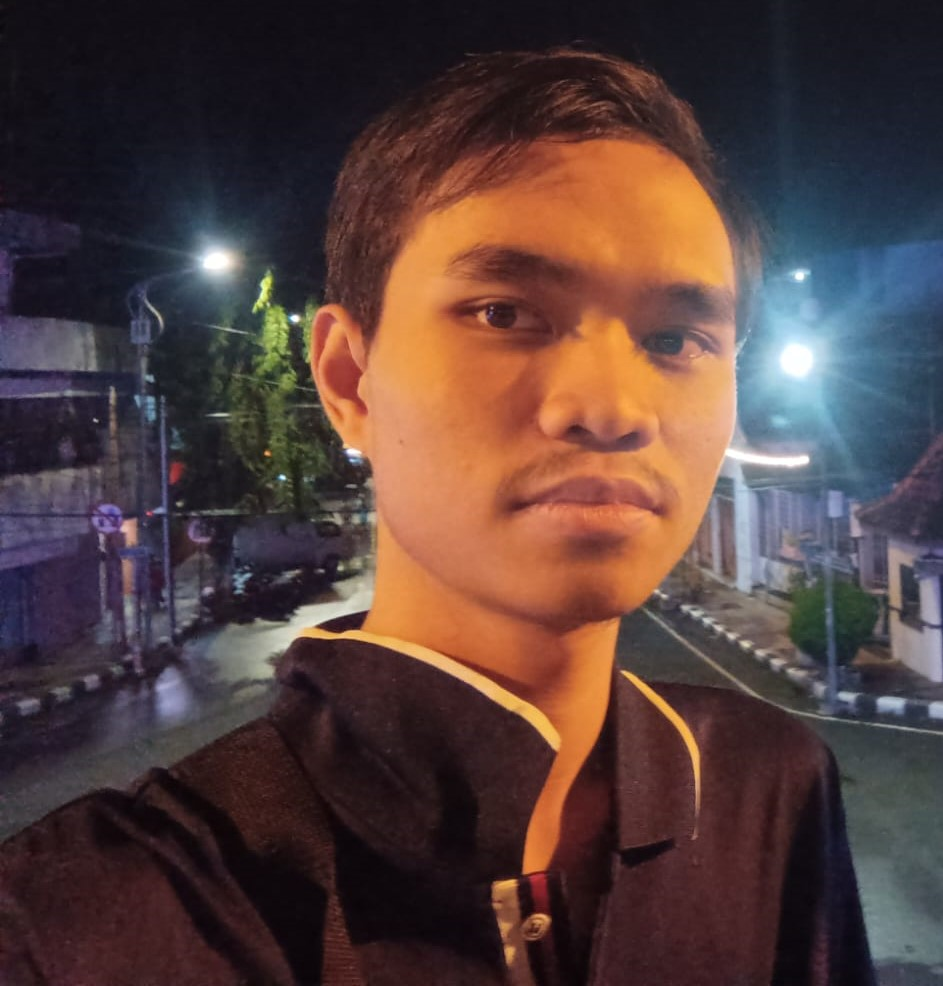
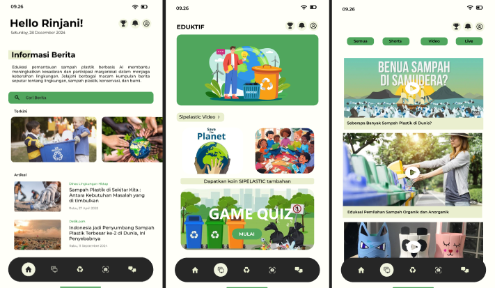
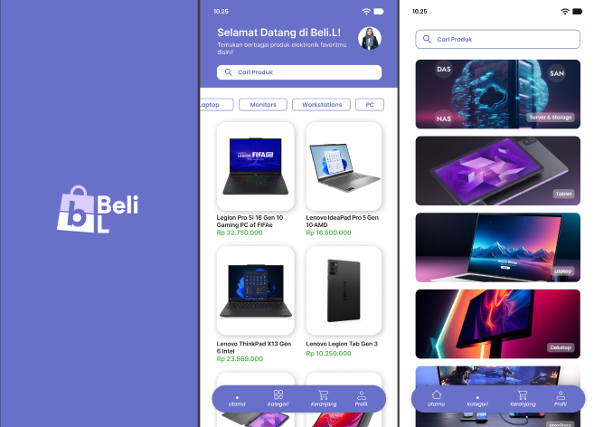
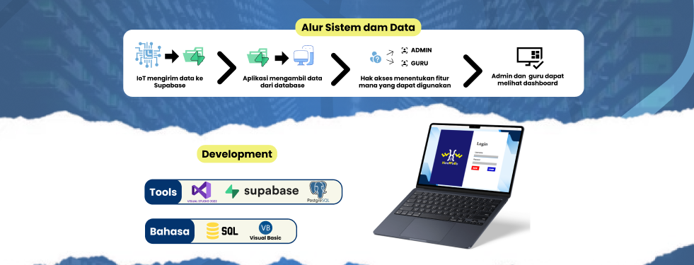
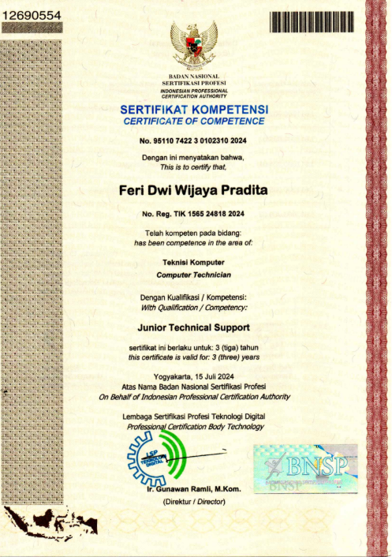
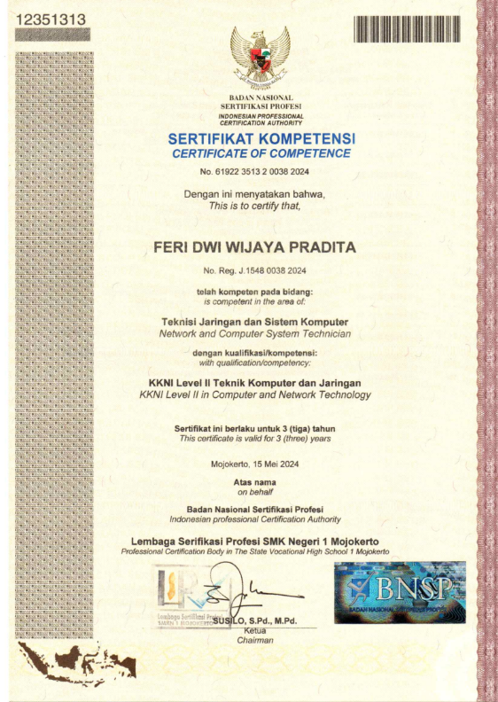

Halo, saya
Membangun jaringan yang handal dan menciptakan solusi digital yang inovatif untuk masa depan

Awalnya saya mengenal dan tertarik dengan dunia Networking sejak bersekolah di SMK. Dari situlah saya belajar bagaimana jaringan komputer bekerja, membangun infrastruktur, dan memecahkan masalah koneksi.
Saat memasuki dunia perkuliahan, saya mulai tertarik dan mengeksplorasi dunia Programming. Saya menyadari bahwa dengan menggabungkan kemampuan networking dan coding, saya bisa menciptakan solusi yang jauh lebih powerful dan lengkap.
Sekarang saya terus belajar dan mengembangkan kemampuan di kedua bidang ini, untuk menjadi teknologi profesional yang handal dan adaptif terhadap perkembangan zaman.
Jurusan Teknik Komputer dan Jaringan
2020 - 2024
Disini saya mempelajari dasar-dasar jaringan komputer, routing, switching, dan administrasi server.
S1 Pendidikan Teknologi Informasi
2024 - Sekarang
Saat ini saya sedang menempuh pendidikan sarjana, dimana saya mendalami ilmu pemrograman, algoritma, dan pengembangan sistem.
PKL / Magang
CV. Karunia Abadi Computer | 2023
Organisasi
Dewo Robotic UNESA | 2024

Aplikasi SIPELASTIC bertujuan untuk meningkatkan edukasi, mempermudah proses daur ulang, dan mendorong partisipasi aktif generasi muda dalam pengelolaan sampah plastik melalui pendekatan teknologi dan interaktif.


Aplikasi presensi sekolah berbasis IoT. Proyek ini menggabungkan perangkat IoT dan aplikasi berbasis web/mobile untuk pengumpulan dan monitoring data real-time. Data disimpan di Supabase (PostgreSQL) agar mudah diakses dan dikelola. Hak akses berbasis peran memastikan kontrol penuh bagi Admin dan akses pengamatan bagi Guru.

Junior Technical Support - BNSP

KKNI Level II bidang Komputer dan Teknologi Jaringan - BNSP